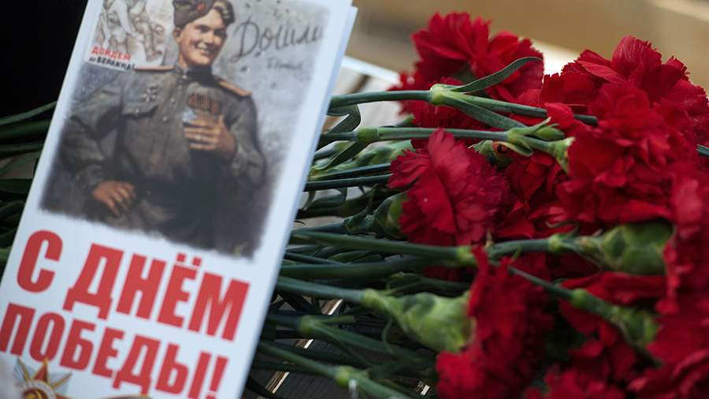

Письмо с фронта
9 мая 1945 года
«Здравствуйте, мои дорогие! Вот и наступил тот день, ради которого мы прошли тысячи вёрст через огонь и дым. Победа! Война окончена. Скоро я обниму вас. Помните тех, кто остался на полях сражений, берегите мир, который мы завоевали...»
Бессмертный подвиг
Документальные очерки, фронтовые письма и подлинные биографии защитников Родины.
Изучить →
Семейные архивы
Личные воспоминания потомков, уникальные фотографии и свидетельства очевидцев.
Смотреть архивы →